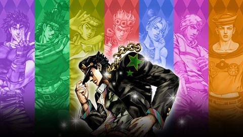
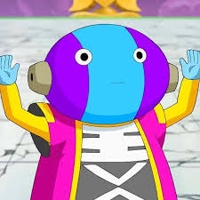
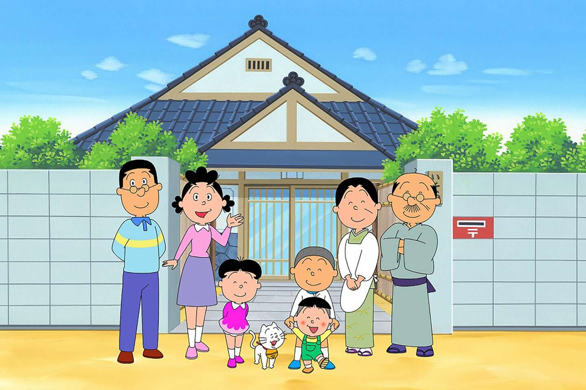
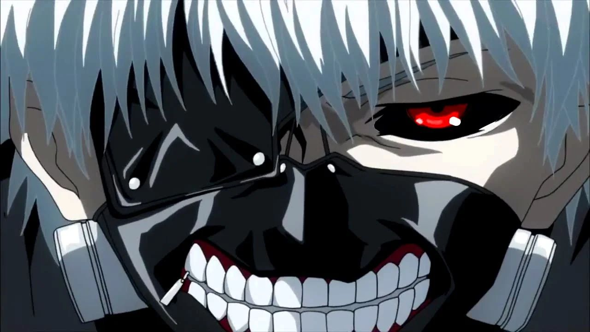

L e s d i f f e r e n t s t y p e s d ' a n i m é s
C'est Dragonball qui est le meilleur animé. Depuis que Dragonball a commencé en mille-neuf-cent-quatre-vingt-trois, il a été très vite rependu partout dans le monde Grâce au personnage iconnique Son Goku.
Jojo Bizzare adventure est l'animé le plus bizzare car l'histoire est consacrer a plusieur jojo (il y en a huit en tout) chaque Jojo a sa propre histoire, après le sixième jojo, l'animé recommence au tout début mais sur une autre version tout ça a cause des stands.
C'est zeno car il possède douze univers pour lui et il peut faire ce qu'il a envie de ces douze univers comme les visiter (car malgré sont âge il a surement pas tout visiter) il a douze dieux de la destruction a son service (dont c'est eux qui gère un univers)
Comme je l'ai deja expliquer c'est saitama car il tue tout le monde en un seule coup de poing sauf Boros.

Il s'agit de sazae-san. Cet animé est composée plus de deux-mille épisodes. Il à débuté avant les années septente, il est toujours en cours ce qui est surprenant c'est que l'animé est sans fin il y aura toujour une suite, L'animées est basée sur une grande famillie japonaise qui vivent une longue aventure (sans-fin car cet animé est toujours active).
Il s'agit de Tokyo Ghoul car il est composé de plusieurs scène scannibale et des scènes de meurtre assez violent (on a même une scène ou kaneki se fait torturer).
